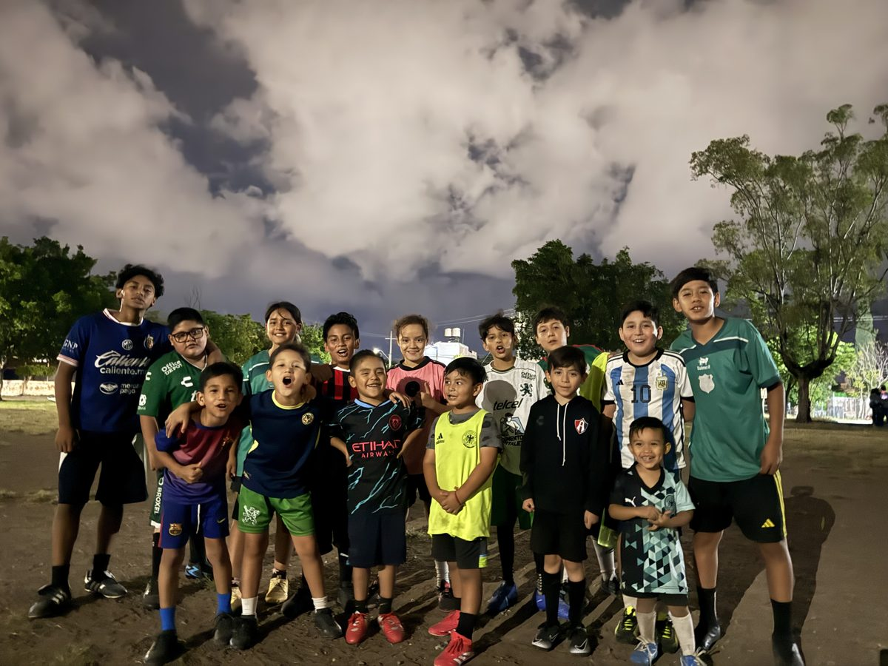

Mi autobiografia
Me llamo Uriel Jimenez y tengo 19 años. Vivo en Leon, Guanajuato y actualmente soy estudiante de la Universidad Tecnologica de Leon.
Desde pequeño me ha gustado mucho el futbol.
Hoy tambien es parte de mi trabajo, porque dirijo
Artilleros, una escuela de futbol infantil.
Me gusta convivir con los niños y ayudarlos a aprender y a divertirse.

Mis gustos y hobbies
Estas son algunas de las cosas que mas disfruto hacer:
- Jugar y ver futbol
- Entrenar a los niños de Artilleros
- Convivir con mi familia
- Estudiar tecnologia y paginas web
Mis datos en resumen
| Tema | Informacion |
|---|---|
| Nombre | Uriel Jimenez |
| Edad | 19 años |
| Ciudad | Leon, Guanajuato |
| Estudios | Universidad Tecnologica de Leon |
| Deporte favorito | Futbol |
| Proyecto | Artilleros |
Otras paginas
Si quieres conocer mas, visita la pagina de mi familia o regresa al inicio.